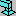
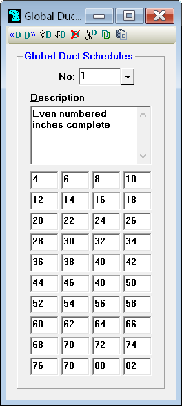

Global Duct Schedules (Tools Menu) |
  
|
Global Duct Schedules (Tools Menu) |
|
Icon:

. Keyboard Shortcut: ALT, T, DOpens the Global Duct Schedules window, where you can edit the database of global duct schedules. The schedule entries are for duct width (for rectangular ducts) or duct diameter (for round ducts) and are entered in inches. The schedule is used in an Rhvac project by selecting it from the dropdown list on the General Project Data window.

Previous Schedule: Go to the schedule before the one currently being viewed.
Next Schedule: Go to the schedule after the one currently being viewed.
Add Schedule: Adds a new blank schedule at the end of the list.
Insert Schedule: Inserts a new blank schedule in sequence before the current schedule.
Delete Schedule: Permanently deletes the current schedule from the duct schedule database. You will be asked to confirm that you really want to delete the schedule.
Cut Schedule: Copies the current schedule to the Clipboard and deletes it from the database.
Copy Schedule: Copies the current schedule to the Clipboard.
Paste Schedule: Copies the schedule in the Clipboard into the current schedule. This item is only available after having copied a schedule to the Clipboard with the Copy Schedule button.
No: Number of the schedule currently being edited. To go to another schedule in the list, click the down arrow button beside this input and click the other schedule in the dropdown list, or type the schedule number and press ENTER.
Description: Brief description of the current schedule.
Schedule Entries (40): These entries will be used as either duct widths or duct diameters when a schedule is selected on the duct tab of the General Project Data window.